기계정비산업기사 (2011-08-21 기출문제)
1과목: 공유압 및 자동화시스템
1. 유압기계에서 사용되는 다음의 밸브가 뜻하는 것과 거리가 먼 것은?
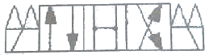
- 4포트
- 오픈 센터
- 가스켓
- 3위치
(정답률: 90%)

2. 온도가 일정할 때 절대압력과 체적과의 관계로 맞는 것은?
- 공기의 체적은 절대 압력에 비례한다.
- 공기의 체적은 절대 압력에 반비례한다.
- 공기의 체적은 절대 압력의 제곱에 비례한다.
- 공기의 체적은 절대 압력의 제곱에 반비례한다.
(정답률: 61%)
3. 윤활 된 부품들이 일정시간(주말이나 공휴일 등)정지 후에 윤활유 및 기타 이물질이 고착되어 제 기능을 발휘하지 못하는 현상을 무엇이라 하는가?
- gumming 현상
- jumping 현상
- chattering 현상
- cavitation 현상
(정답률: 85%)
4. 유압 회로의 최고 압력을 제한하여 회로 내의 과부하를 방지하며, 유압 모터의 토크나 실린더의 출력을 조절하는 밸브는?
- 릴리프 밸브
- 시퀀스 밸브
- 언로딩 밸브
- 스로틀 밸브
(정답률: 86%)
5. 공기압 저장 탱크의 기능으로 적합하지 않은 것은?
- 넓은 표면적에 의해 압축공기를 냉각시킨다.
- 공기 압력의 맥동을 없애는 역할을 한다.
- 정전에 대비 짧은 시간 운전이 가능하다.
- 공기의 소모량을 줄인다.
(정답률: 61%)
6. 다음의 조건으로 유압 펌프를 선정하고자 할 때 적합하지 않은 펌프는?
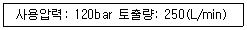
- 나사 펌프
- 회전 피스톤 펌프
- 왕복동 펌프
- 베인2단 펌프
(정답률: 71%)
7. 다음 기호의 명칭으로 적합한 것은?
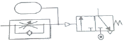
- 정상상태 열림 한시복귀형 시간제어밸브
- 정상상태 열림 한시작동형 시간제어밸브
- 정상상태 닫힘 한시복귀형 시간제어밸브
- 정상상태 닫힘 한시작동형 시간제어밸브
(정답률: 64%)
8. 공유압시스템에서 기본적인 3가지 제어가 아닌 것은?
- 압력제어
- 유량제어
- 위치제어
- 방향제어
(정답률: 74%)
9. 다음 유압회로의 명칭으로 맞는 것은?
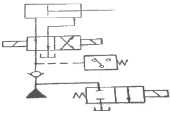
- 최대 압력제한회로
- 단락에 의한 무부하회로
- Hi-Lo 에 의한 무부하회로
- 텐덤 센터밸브에 의한 무부하회로
(정답률: 56%)
10. 공기압 실린더의 고정방법 중 가장 강력한 부착이 가능한 형식은?
- 풋형
- 플랜지형
- 피벗형
- 트러니언형
(정답률: 66%)
11. 컨베이어를 이용한 자동화시스템을 설계하고자 할 때 기본 설계원칙에 해당되지 않는 것은?
- 속도의 원칙
- 이송능력한계
- 투입 산출의 원칙
- 균일성의 원칙
(정답률: 69%)
12. PLC를 이용하여 시스템을 제어하는 과정에서 프로그램 에러를 찾아내어 수정하는 작업은?
- 코딩
- 디버깅
- 모니터링
- 프로그래밍
(정답률: 89%)
13. 1kbit 에 대한 설명으로 맞는 것은?
- 256bit
- 128byte
- 256byte
- 128bit
(정답률: 64%)
14. 센서의 사용 목적과 가장 거리가 먼 것은?
- 연산제어처리
- 정보의 수집
- 정보의 변환
- 제어정보의 취급
(정답률: 72%)
15. 일반적으로 아날로그 신호로 사용되지 않는 것은?
- AC 0 ~ 24V
- DC -10V ~ +10V
- DC 0 ~ +10V
- 4 ~ 20 mA
(정답률: 61%)
16. 메모리의 단위를 크기순으로 정렬한 것 중 옳은 것은?
- bit ＜ Kbyte ＜ Mbyte ＜ Gbyte
- Kbyte ＜ Mbyte ＜ Gbyte ＜ bit
- Mbyte ＜ Gbyte ＜ byte ＜ bit
- Mbyte ＜ bit ＜ kbite ＜ Gbyte
(정답률: 89%)
17. FMS 의 자동화 레벨을 결정하는 요소가 아닌 것은?
- 필요공구
- 처리시간
- 생산량
- 로트사이즈
(정답률: 46%)
18. 설비의 로스(Loss) 중 정지로스에 해당되는 것은?
- 고장정지 로스, 작업준비 조정로스
- 공정 순간정지로스, 속도저하로스
- 불량 수선로스, 초기유동관리 수율로스
- 고장정지 로스, 공전 순간정지로스
(정답률: 71%)
19. 유압모터 중 구조가 가장 간단하며 출력 토크가 일정하고 정 역회전이 가능한 유압모터는?
- 피스톤 모터
- 요동 모터
- 베인 모터
- 기어 모터
(정답률: 75%)
20. 실린더 전진 시 이론출력을 나타내는 식으로 맞는 것은? (단, D: 실린더 내경, P : 사용공기압력, d : 로드 직경이며, 마찰력은 무시하고 로드측 압력은 대기압이다.) π:파이
- (πD^2 /4) * P
- (π/4)(D^2-d^2)*P
- π/4DP^2
- π/4(D-d)*P^2
(정답률: 64%)
2과목: 설비진단관리 및 기계정비
21. 재료의 흡음율(a)을 나타내는 것은?
- a = 입사에너지/흡수된 에너지
- a = 흡수된에너지/입사에너지
- a = 흡수된에너지/투과에너지
- a = 입사에너지/투과에너지
(정답률: 68%)
22. 소음의 물리적인 성질에 대한 설명 중 올바른 것은?
- 음원에서 모든 방향으로 동일한 에너지를 방출할 때 발생하는 파는 정재파이다.
- 대기 온도차에 의한 음의 굴절은 온도가 높은 쪽으로 굴절한.
- 음파가 한 매질에서 다른 매질로 통과할 때 구부러지는 현상을 음의 회절이라 한다.
- 서로 다른 파동 사이의 상호작용은 음의 간섭이다.
(정답률: 72%)
23. 설비배치 계획이 필요하지 않은 것은?
- 새 원료의 투입
- 새공장의 건설
- 신제품의 제조
- 작업장의 확장
(정답률: 70%)
24. 공정별 배치(Process Layout)에 대한 설명으로 틀린 것은?
- 같은 종류의 기계들이 한 작업장에 같은 기능별로 배치되어 있다.
- 다품종 소량생산에 적합한 배치 방법이다.
- 생산효율을 높이기 위해서는 운반거리의 최소화가 주안점이다.
- 로트생산을 하기 때문에 재공재고가 적다.
(정답률: 64%)
25. 다음 그림과 같은 설비관리 조직의 형태를 무엇이라고 하는가?
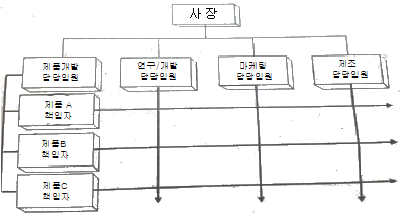
- 기능중심 매트릭스(Matrix) 조직
- 제품중심 매트릭스(Matrix) 조직
- 대상별 조직
- 전문기술별 조직
(정답률: 75%)
26. 속도센서로 널리 사용되는 동전형 속도센서의 측정원리로 맞는 것은?
- 압전의 법칙
- 패러데이의 전자유도 법칙
- 렌쯔의 법칙
- 오른나사의 법칙
(정답률: 76%)
27. 보전작업의 낭비를 제거하여 효율성을 증대시키기 위한것으로 보전작업 측정 검사 및 일정계획을 위해서 반드시 필요한 것은?
- 설비효율측정
- 로스(Loss) 관리
- 설비보전표준
- 설비 경제성 평가
(정답률: 78%)
28. 일반적으로 가공 및 조립형산업에서 설비의 효율을 저해하는 6대 로스(loss)와 거리가 가장 먼 것은?
- 시가동로스
- 고장로스
- 일시정체로스
- 속도저하로스
(정답률: 78%)
29. 정비계획 수립 시 고려할 사항이 아닌 것은?
- 생산계획 확인
- 설비능력 파악
- 제품성분 분석
- 수리요원
(정답률: 63%)
30. 측정된 진동 값에 대해 정상 값인지 이상 값인지를 판정하는 기준의 종류가 아닌 것은?
- 절대판정기준
- 절충판정기준
- 상대판정기준
- 상호판정기준
(정답률: 73%)
31. 회전기계에서 채취한 오일 샘플링에서 마모입자를 자석으로 검출하여 크기, 형상 및 재질 등을 분석하여 이상 원인을 규명하는 설비진단기법은?
- 원자흡광법
- 회전전극법
- 페로그래피법
- 응력법
(정답률: 69%)
32. 설비보전 표준 설정의 직접 기능에 속하지 않는 것은?
- 설비 검사
- 설비정비
- 설비수리
- 설비교체
(정답률: 74%)
33. 품질보전의 전개에 있어서 요인해석의 방법에 해당하지 않는 것은?
- FMECA 분석
- PM 분석
- 특성 요인도
- 경제성 분석
(정답률: 72%)
34. 보전자재 관리 중에서 가장 중요한 요소 중 보전자재에 대한 재고관리이다. 그러나 모든 자재를 동일하게 관리할 수 없기 때문에 금액이나 중요도에 의하여 구분한다. 중요도에 의한 구분에서 A등급에 포함되지 않는 것은?
- 수입자재
- 납기 기간이 2개월 이상인 자재
- 즉시 확보가능 자재
- 생산에 지대한 영향을 주는 자재
(정답률: 73%)
35. 단위시간당 사이클의 횟수를 나타내는 것은?
- 진폭
- 주기
- 변위
- 주파수
(정답률: 57%)
36. 회전기계장치에서 회전수와 동일한 주파수가 검출되었을 때 진동을 발생시키는 주 원인은?
- 언밸런스
- 풀림
- 오일휩
- 캐비테이션
(정답률: 67%)
37. 설비관리의 조직계획상 고려할 사항이 옳게 연결된 것은?
- 제품의 특성 - 프로세스, 계속성
- 설비의 특징 - 입지, 분산의 비율, 환경
- 외주 이용도 - 구조, 기능, 열화의 속도 및 정도
- 인적구성과 그의 역사적 배경 - 기술 수준, 관리 수준, 인간관계
(정답률: 76%)
38. 보전효과 측정방법에서 항목별 계산공식으로 잘못된 것은?
- 고장빈도(회수)율 = 고장건수/부하시간 *100
- 고장강도율 = 고장정지시간/ 부하시간 *100
- 설비가동율 = 부하시간/ 가동시간 *100
- 예방보전 수행율 = 예방보전건수/예방보전계획건수 *100
(정답률: 66%)
39. 축면에 나선상의 홈을 만들고 축의 회전에 따라 나선상의 기름 홈을 통해서 윤활유가 급유되는 방식은?
- 롤러 급유법
- 원심 급유법
- 나사 급유법
- 유욕 급유법
(정답률: 76%)
40. 슬리브베어링의 진동 원인으로 틀린 것은?
- 축과 틈새의 과대
- 기계적 헐거움
- 전동체의 결함
- 윤활유 관계의 문제
(정답률: 40%)
3과목: 공업계측 및 전기전자제어
41. 3상 유도전동기가 운전 중 갑자기 정지하였다. 대책으로 올바른 방법이 아닌 것은?
- 전원의 정전유무를 조사한다.
- 전동기 전원을 다시 넣어 전동기가 운전되면 계속 사용한다.
- 전동기를 기동해 보아 이상이 없는가를 조사한다
- 전동기 단자의 전압을 측정한다.
(정답률: 82%)
42. 시퀀스제어에 관한 설명 중 틀린 것은?
- 논리조합회로가 이루어진다
- 전체시스템을 순차적으로 작동시킬 수 없다.
- 릴레이회로가 사용되어 진다
- 시간지연 요소가 이용된다
(정답률: 83%)
43. 보드(Bode)선도의 횡축에 대하여 옳은 것은?
- 이득 - 균등눈금
- 이득 - 대수눈금
- 주파수 -균등눈금
- 주파수 - 대수눈금
(정답률: 55%)
44. 다음 논리회로도의 출력식은?
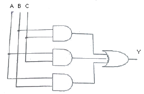
- Y=ABC
- Y=A+B+C
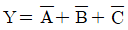
- Y=AB+BC+AC
(정답률: 77%)
45. 다음중 회로시험기로 측정할 수 없는 것은?
- 교류전압
- 직류전류
- 직류전압
- 교류전류
(정답률: 68%)
46. 다음 중 조작기기의 요소가 구비해야 할 조건으로 적절하지 않은 것은?
- 신뢰성이 높고 보수가 쉬울 것
- 요소에 가해지는 반력에 대하여 작동하는 조작력이 있을 것
- 동작범위, 특성 및 크기가 적당할 것
- 움직이는 부분의 이력현상(hysterisis)이 있고 반응속도가 빠를 것
(정답률: 80%)
47. 농형 유도전동기의 기동법으로 사용되지 않는 것은?
- 전전압기동법
- 기동보상기법
- Y-△기동법
- 2차 저항법
(정답률: 60%)
48. 측정방식에서 영위법 방식으로 많이 쓰이는 계기는?
- 다이얼게이지
- 전위차계
- 부르동관 압력계
- 가동코일형 전압계
(정답률: 48%)
49. 지시 전기계기의 일반적인 특징이 아닌 것은?
- 기계적으로 강할 것
- 지침의 흔들림이 빨리 정지할 것
- 내전압이 낮을 것
- 과부하에 강할 것
(정답률: 68%)
50. 자기 인덕턴스가 0.5[H] 인 코일에 전류 10[A]를 흘릴 때 축적되는 에너지는 몇 [J]인가?
- 50
- 25
- 5
- 2.5
(정답률: 50%)
51. 미세한 측정 조건의 변동으로 인한 오차는?
- 과실오차
- 환경오차
- 개인오차
- 계기오차
(정답률: 71%)
52. 신호전송의 노이즈에 대한 대책으로 전력선 용량 중 전압이 250V이면 전력선과 신호선관의 최저 격리거리는?
- 300mm
- 460mm
- 610mm
- 1200mm
(정답률: 53%)
53. 3상 유도전동기의 정 역 운전회로에서 정 역 동시 투입에 의한 단락사고를 방지하기 위하여 사용하는 회로는?
- 인터록회로
- 자기유지회로
- 역상회로
- 시한동작회로
(정답률: 82%)
54. 블록선도에서 블록을 잇는 선은 무엇을 표시하는가?
- 변수의 흐름
- 대상의 흐름
- 공정의 흐름
- 신호의 흐름
(정답률: 75%)
55. 다음 중 이상적인 연산증폭기의 특성이 아닌 것은?
- 입력 임피던스는 무한대 이다.
- 전압이득은 0 이다
- 대역폭은 무한대이다
- 출력 임피던스는 0 이다
(정답률: 75%)
56. 다음 수식에서 드모르간의 법칙이 맞는 것은?
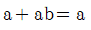
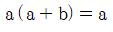
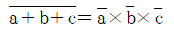
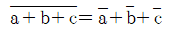
(정답률: 69%)
57. 연산증폭기를 사용한 전압 폴로어의 특징이 아닌 것은?
- 이득이 1에 가까운 비반전 증폭기이다
- 추종성이 좋아 입력과 다른 극성의 출력을 얻는다
- CMRR 의 영향을 받기 쉽다.
- 출력 임피던스를 낮게 잡을 수 있다.
(정답률: 44%)
58. 다음 중 제어시스템의 안정도 판별법이 아닌 것은?
- 루츠-후르비츠 판별법
- 나이키스트 판별법
- 디지털제어 판별법
- 보드선도 판별법
(정답률: 57%)
59. 다음의 특성방정식을 갖는 시스템의 안정도는?
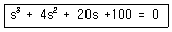
- 안정하다
- 불안정하다
- 안정, 불안정 여부를 파악할 수 없다
- 고주파영역에서만 안정하다
(정답률: 72%)
60. PLC 제어의 특징이 아닌 것은?
- 복잡한 제어라도 설계가 용이하다.
- 신뢰성이 우수하다
- 접촉불량 발생우려가 있으며 수명의 제약이 있다
- 프로그램 변경만으로 제어내용을 가변할 수 있다
(정답률: 76%)
4과목: 기계정비 일반
61. 마이크로미터를 설명한 사항 중 틀린 것은?
- 보통의 마이크로미터 스핀들 나사의 피치는 0.5mm 이고 딤블은 원주를 50등분 하였다.
- 앤빌과 스핀들 사이에 측정물을 넣어 딤블을 가볍게 회전시켜 측정한다.
- 마이크로미터의 측정범위는 0~50mm,50~100mm와 같이 50mm 간격으로 되어 있다.
- 마이크로미터 래칫스톱을 2회이상 공전시킨 후 눈금을 읽는다.
(정답률: 68%)
62. 롤러 베어링을 축에 장착하는 방법으로 적당하지 않은 것은?
- 가열유조에 의한 방법
- 고주파 가열기에 의한 방법
- 프레스 압입에 의한 방법
- 펀치에 의한 타격 방법
(정답률: 73%)
63. 부러진 볼트를 빼는데 사용되는 공구는?
- 토크랜치
- 짐크로
- 임팩트렌치
- 스크루 엑스트랙터
(정답률: 83%)
64. 펌프운전 시 소음발생 원인이 아닌 것은?
- 캐비테이션 발생
- 흡입측에 공기유입
- 글랜드 패킹의 누수
- 베어링 불량
(정답률: 61%)
65. 체인의 검사 기준과 관련이 가장 적은 것은?
- 체인의 길이가 처음보다 5% 이상 늘어났을 때
- 링(Ring)의 단면의 직경이 10%이상 감소했을 때
- 과부하가 걸렸을 때
- 균열이 발생했을 때
(정답률: 70%)
66. 분해작업 시 주의사항이다. 잘못된 것은?
- 분해순서를 정확히 지키고 작업한다.
- 마킹(marking)은 반드시 한다.
- 길이가 긴 부품은 굽힘을 고려하여 세워 보관한다.
- 작은 부품은 분실되지 않도록 상자에 보관한다.
(정답률: 84%)
67. 흐르는 전류를 검출하여 전동기를 보호하는 것은?
- 전자 릴레이
- 과부하 계전기
- 전자 개폐기
- 누전 차단기
(정답률: 58%)
68. 압축기 부품에서 밸브의 취급불량에 의한 고장이라고 볼 수 없는 것은?
- 리프트의 과소
- 볼트의 조임 불량
- 시트의 조립 불량
- 스프링과 스프링 홈의 부적당
(정답률: 55%)
69. 소형원심펌프에서 전 양정이 몇 m 이상일 때 체크밸브를 설치하는가?
- 10m
- 20m
- 50m
- 100m
(정답률: 62%)
70. 전동기의 과열 원인으로 거리가 먼 것은?
- 과부하 운전
- 빈번한 기동
- 베어링부에서의 발열
- 전원 전압의 변동
(정답률: 72%)
71. 관 이음쇠의 기능이 아닌 것은?
- 관로의 연장
- 관로의 곡절
- 관의 피스톤 운동
- 관로의 분기
(정답률: 79%)
72. 기어의 파손원인 중 윤활 문제로 발생하는 것은?
- 피칭
- 스코어링
- 스폴링
- 피로파괴
(정답률: 71%)
73. 다음 중 정비용 측정기구에 해당하는 것은
- 파이프렌치
- 오스터
- 베어링 체커
- 플레어링 툴 세트
(정답률: 68%)
74. 왕복펌프의 종류가 아닌 것은?
- 기어펌프
- 피스톤 펌프
- 플런저펌프
- 다이어프램펌프
(정답률: 62%)
75. 펌프의 흡입관 배관에 대한 설명 중 틀린 것은?
- 흡입관에서 편류나 와류가 발생치 못하게 한다.
- 관의 길이는 길게하고 곡관의 수는 적게 한다.
- 흡입관 끝에 스트레이너를 사용한다.
- 배관은 공기가 발생치 않도록 펌프를 향해 1/50 올림구배를 한다.
(정답률: 64%)
76. 보통 PIV 라고도 하며 한쌍의 베벨기어 내 강제링크 체인을 연결하여 유효반경을 바꿈으로서 회전수를 조절하는 무단변속기는?
- 디스크형 무단변속기
- 링크형 무단변속기
- 체인형 무단변속기
- 벨트형 무단변속기
(정답률: 71%)
77. 주철제 원통 속에 두 축을 맞대어 끼워 키로 고정한 축이음으로 맞는 것은?
- 유체 커플링
- 머프 커플링
- 플렉시블 커플링
- 플랜지 커플링
(정답률: 61%)
78. 다음 중 기어 이의 열화 현상이 아닌 것은?
- 과부하로 인한 파손
- 표면의 피로
- 이면의 간섭
- 습동 마모
(정답률: 46%)
79. 실로코 통풍기의 베인 방향으로 옳은 것은?
- 전향베인
- 경향베인
- 후향베인
- 수직베인
(정답률: 72%)
80. 대형 송풍기의 V-벨트가 마모 손상되었을 때의 대책은?
- 전체 세트로 교체한다.
- 손상된 벨트만 교체한다.
- 손상된 벨트를 계속 사용한다.
- 손상된 벨트를 수리한다.
(정답률: 72%)